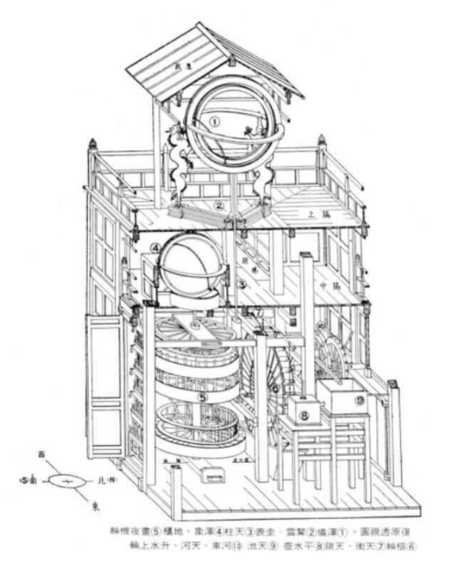
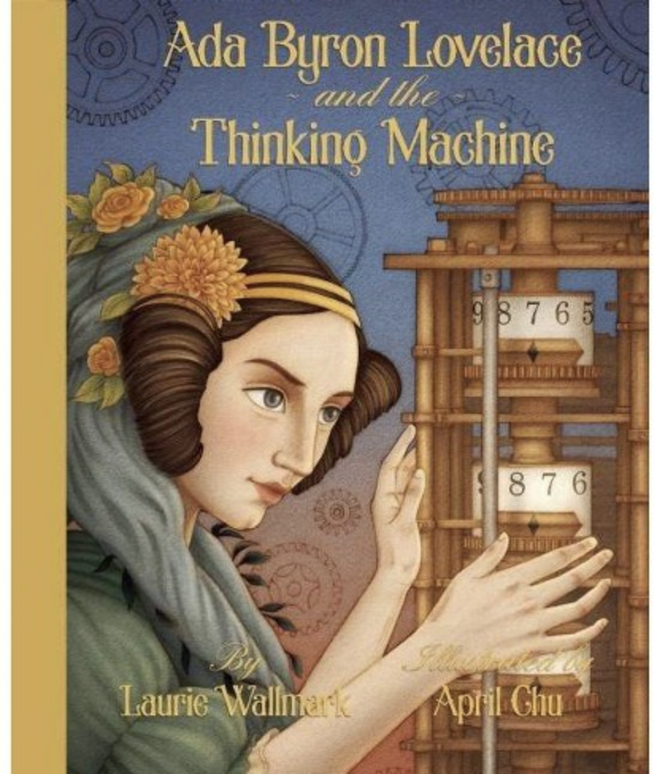
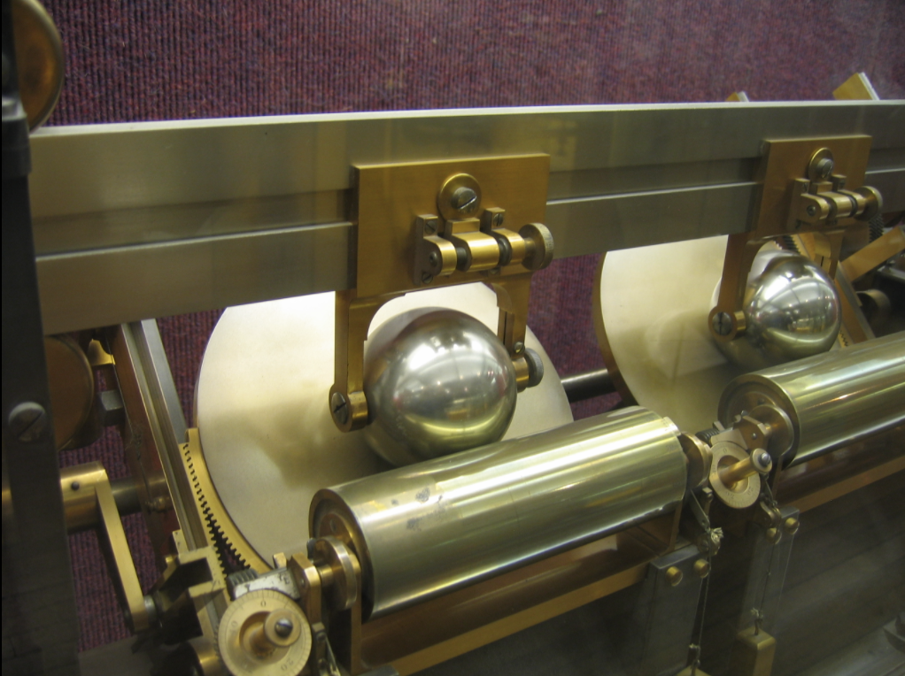
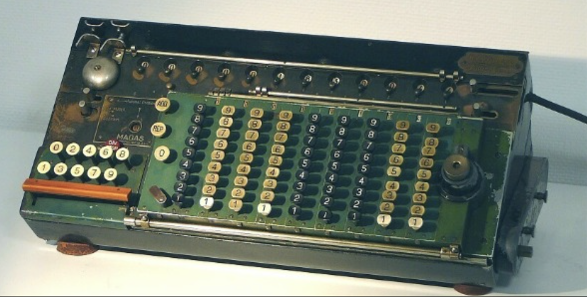
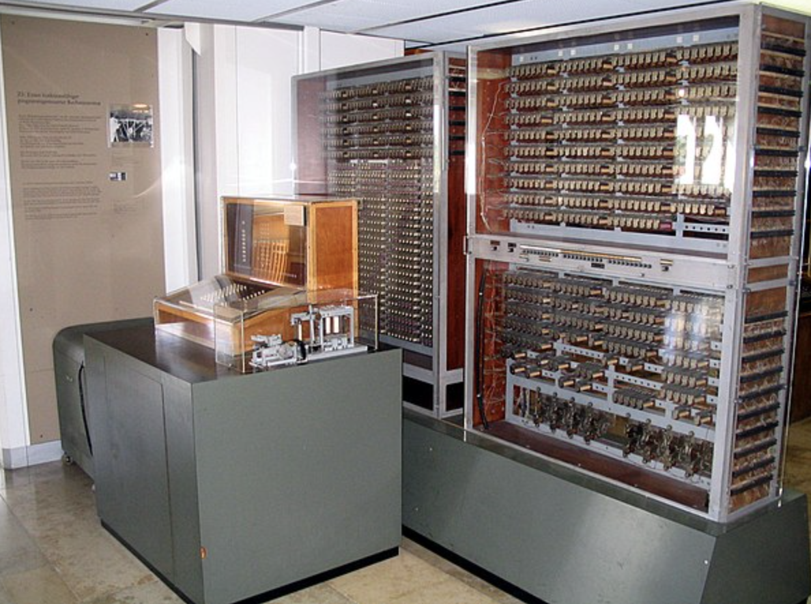

Antikythera Mechanism, built around 100 BC, was a mechanical astronomical clock.
Cosmic Engine was built by Su Song in 1092 and was a hydro-mechanical astronomical clock tower;

The Difference Engine, built by Charles Babbage in 1819 was a programmable calculator. It was "automatic" in that it could perform the calculations without intervention as long as someone provided power (hand-cranked).
Babbage theorized a more general machine that could be programmable and could do many more things. This was called the Analytical Engine (which has not yet been built as described by Babbage).
Ada Lovelace, who worked with Babbage, published the first computer algorithm and is commonly referred to as the first computer programmer.

Analog mechanical computers (late 1800's) were built to solve equations to predict all sorts of things

Electromechanical calculators (early 1900's).

Z3 (1941) first electromechanical programmable, fully automatic digital computer.

Several electromechanical computers built during WW2 to crack codes. Colossus (1943) was the first electronic digital programmable computer. "Programs" were defined by the states of its patch cables and switches.
After WW2, we see an explosion in computing speed, memory capacity, and programming complexity.
The electronic stored program (see Manchester Baby) became a "thing".
An important component is the "transistor" (more on this later) was invented in 1947.
It allowed the construction of smaller, faster, and more efficient computers: Moore's law postulated that the number of transistors that can be packed into a given unit of space will double about every two years.
Effect... look in your pocket or wrist.
(this is from the late 80's or early 90's!)
Activity 4 [4 minutes]: Using these definitions and notes, we can ask the questions:
Is an abacus a computer?
Is a calculator a computer?
Are one or more human "computers" computers?
Can we build a computer using dominoes (wait to click)?
Can we build a computer using water (wait to click)?
Evolution of symbols and processing system
Paper, pencil & brain
Gears & levers
Voltages & logic circuits
The Big picture for the class
Ideas
Needs
...
Input/Output Devices
Memory
ALU: Arithmetic-Logic Unit
Control Unit
System Software
Utilities
Applications
Remaining checklist for today:
Course Information
Locate the course page on Moodle
Locate Discord info on Moodle and Sign up to Discord
Locate TinkerCad info on Moodle and Sign up to TinkerCad
Meeting and Accommodations
Course Information
The class information is located in the Class Info link of the navigation bar. We will go over it now. When we are done checking it out, make sure to continue here.
Using Discord
We will use Discord as our main communication hub.
Please sign up for Discord:
Join the smith-f21-csc103-01 server.
OR use this invitation link: Join the class discord
You can read this tutorial to get an idea of how to use it.
Using Moodle
Access Moodle here: https://moodle.smith.edu/
We'll keep links to each lecture in Moodle. In addition, we'll have any PDFs, readings, and other resources.
I'll update the course Moodle with the appropriate links and information as we move forward in the course.
Meeting and Accommodations
I would be very happy to meet you during office hours.
This will help me get to know you and learn how best to communicate.
Office Hours are not for remedial or emergency meetings, its part of the academic experience!
In OHs, we can talk about the class work and organization, but also about aspirations, expectations, curiosities, and more.
I really like office hours, so please feel free to drop by.
You may take this opportunity to let me know if you have arranged any accommodations with ODS.
Acknowledgements
This course has been designed with the help of Nick Howe and Shinyoung Cho.